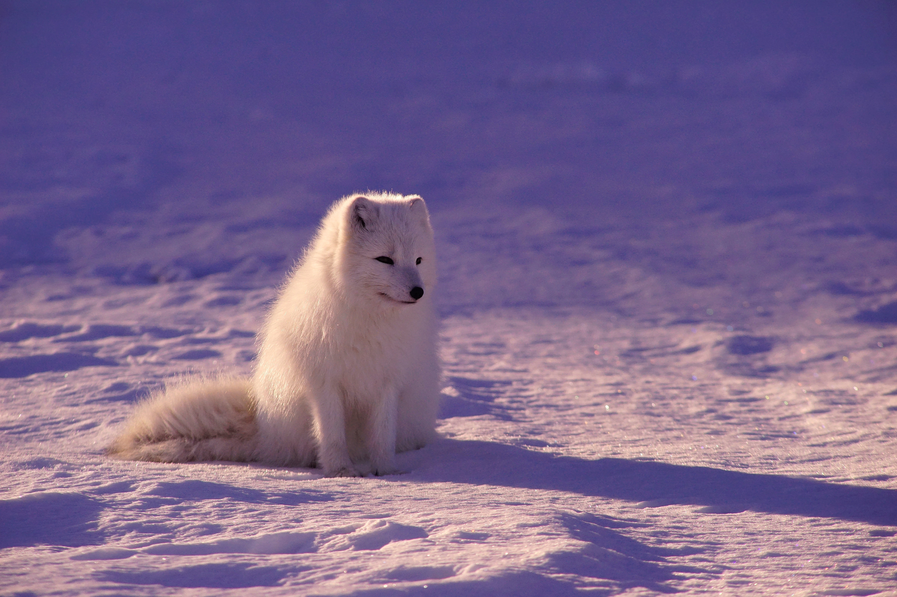

Animals: Data about Diet
Intro
Have you ever wondered if the type of nutrition or diet an animal possess is related to their physical characteristics? Which continents can these animals be seen? Our project aims to provide the audience a dataset filled with information on some of the different animals that are seen in the different continents of the world. Our dataset composes of the physical characteristics an animal has. Animals are multicellular and eukaryotic organisms, with few exceptions, animals consume organic material, has the capability to breathe oxygen, able to move, and can reproduce sexually. As of the year 2022, 2.16 million living animal species have been described. (Animal Information Dataset, 2023)
Discussion
Each animals share distinct characteristics from one another and it is important to able to classify and differentiate these animals, it is also good to know their way of living or how they are able to fend off for themselves.Our dataset consists of 148 animals that are found in the different parts of the world. Different characteristics such as an animal’s height, weight, as well as, the countries they are usually found in. The data was taken around 2022 and was updated a month ago. The reason as to why we chose this data among the other data is because one of us is genuinely curious about the certain characteristics that these said animals possesses.
Conclusion
The animals’ height ranges from 0 up to 914.2 centimeters, while their weights ranges from 621.006 to 1242.506 kilograms. The most frequent height is 92 centimeters, while, the most frequent weight is 54.5 kilograms. Most of the animals are seen in the continent of Asia and these animals are least seen in Antarctica. There is a 26% frequency of the animals being seen in Asia, while there is only 1% of frequency for these animals to be seen in Antarctica. The most common mode of nutrition or diet is Carnivorism, there is about 39% of the animals that has a trait of being a Carnovire. There are 2 least most common mode, which is Piscivore and Scavenger there is only 1% of the animals who has this trait.